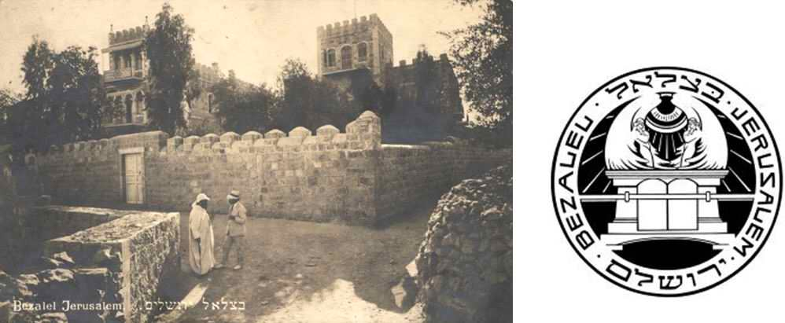
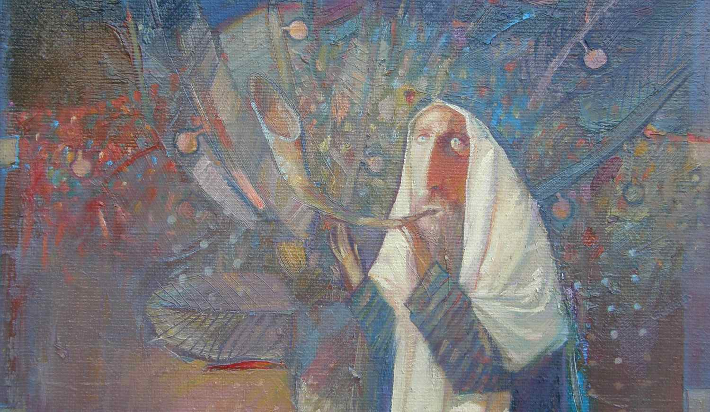
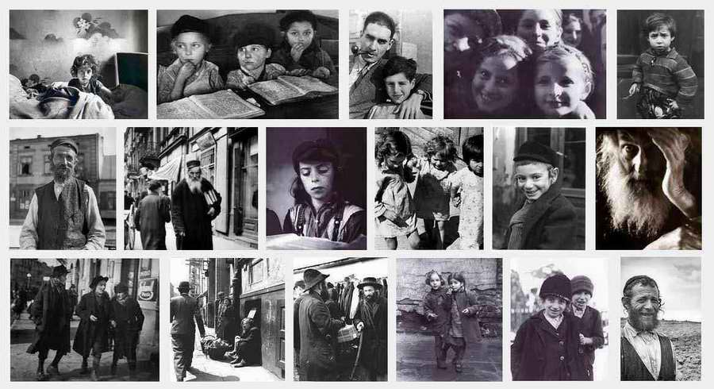
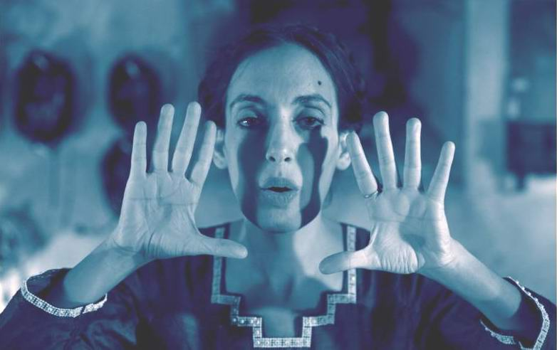
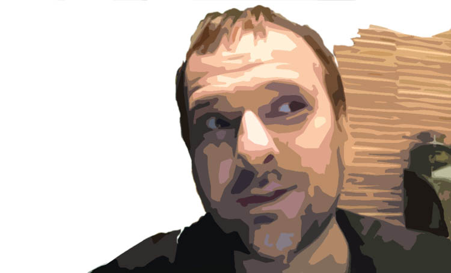
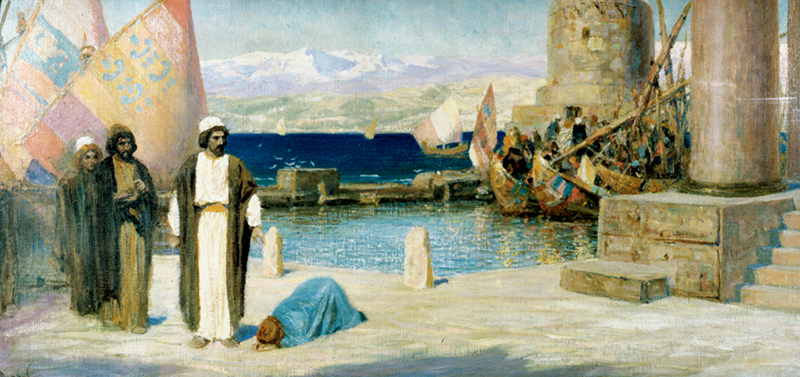
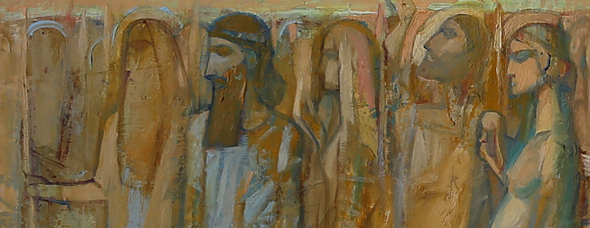

The Bible and the Artist
Faith and calling in the lives of artists, past and present
52 articles
Name and Lineage
 Bezalel. Under the Shelter of the Most High2014 · Art Midrash, The Bible and the Artist
Bezalel. Under the Shelter of the Most High2014 · Art Midrash, The Bible and the Artist Bezalel. Grandfather Hur2014 · Art Midrash, The Bible and the Artist
Bezalel. Grandfather Hur2014 · Art Midrash, The Bible and the Artist Called to Be Refined. Bezalel2016 · Art Midrash, The Bible and the Artist
Called to Be Refined. Bezalel2016 · Art Midrash, The Bible and the Artist Bezalel. One Who Glorifies God2014 · Art Midrash, The Bible and the Artist
Bezalel. One Who Glorifies God2014 · Art Midrash, The Bible and the Artist
The School of Bezalel
 Bezalel the Artist: A Teacher's Heart2014 · Art Midrash, The Bible and the Artist
Bezalel the Artist: A Teacher's Heart2014 · Art Midrash, The Bible and the Artist A Direct Hit on the Target2014 · Art Midrash, The Bible and the Artist
A Direct Hit on the Target2014 · Art Midrash, The Bible and the Artist The School of Bezalel: The Calling to Teach2014 · Art Midrash, The Bible and the Artist
The School of Bezalel: The Calling to Teach2014 · Art Midrash, The Bible and the Artist
Bezalel's Legacy in Modern Times

The Beginnings of Zionist Art. The Ades Synagogue2014 · Artifacts, The Bible and the Artist The Beginnings of Zionist Art. Part III2014 · Artifacts, The Bible and the Artist
The Beginnings of Zionist Art. Part III2014 · Artifacts, The Bible and the Artist Ben Uri: 100 Years of Creative Searching2014 · Artifacts, The Bible and the Artist
Ben Uri: 100 Years of Creative Searching2014 · Artifacts, The Bible and the Artist
More on Bezalel
 A Chronicle of Revelations on Creativity2018 · The Bible and the Artist
A Chronicle of Revelations on Creativity2018 · The Bible and the Artist- An Artist's Talent: A Tool for Knowing the Creator2015 · The Bible and the Artist
- The Artist's Dedication2015 · The Bible and the Artist
 A Partner in God's Creativity. Alexander Men2015 · The Bible and the Artist
A Partner in God's Creativity. Alexander Men2015 · The Bible and the Artist How Should a Believing Artist Respond to Public Acclaim?2015 · The Bible and the Artist
How Should a Believing Artist Respond to Public Acclaim?2015 · The Bible and the Artist His Hands Were Faith (Exod 17:12)2014 · Art Midrash, The Bible and the Artist, The Language of the Bible
His Hands Were Faith (Exod 17:12)2014 · Art Midrash, The Bible and the Artist, The Language of the Bible Faith, Creativity, the Meaning of Life2018 · The Bible and the Artist
Faith, Creativity, the Meaning of Life2018 · The Bible and the Artist
Oleksandr Antonyuk. Faith Cannot Hinder an Artist2014 · The Bible and the Artist- The Actor from "Ushpizin" on His Search for Faith2015 · The Bible and the Artist
- The Artist and the Church: Reflections2014 · The Bible and the Artist
- On the Church's Attitude to Artists: Andrey Dirienko2014 · The Bible and the Artist
 Is There a Place for Patronage in the Body of Messiah Today?2016 · The Bible and the Artist
Is There a Place for Patronage in the Body of Messiah Today?2016 · The Bible and the Artist- Turning the Worship of God into a Concert?2015 · The Bible and the Artist
- How Should a Believing Artist Respond to Public Acclaim?2015 · The Bible and the Artist
- To Watch or Not to Watch...2015 · The Bible and the Artist
Painting and Sculpture
- Oleksandr Antonyuk. Faith Cannot Hinder an Artist2014 · The Bible and the Artist
 Asking Questions. Artist Oleksandr Antonyuk2018 · The Bible and the Artist
Asking Questions. Artist Oleksandr Antonyuk2018 · The Bible and the Artist- Faith, Creativity, the Meaning of Life2018 · The Bible and the Artist
 Jewish Images in the Work of the Catholic Artist Józef Regula2015 · The Bible and the Artist
Jewish Images in the Work of the Catholic Artist Józef Regula2015 · The Bible and the Artist
Music and Sound

Timur Khusnutdinov: A Jewish Album2014 · The Bible and the Artist The Music of Jewish Texts. Victoria Hanna2015 · The Bible and the Artist, The Language of the Bible
The Music of Jewish Texts. Victoria Hanna2015 · The Bible and the Artist, The Language of the Bible
Treasures of Hebrew Words by Victoria Hanna2015 · The Bible and the Artist
Theatre, Literature and Film

Laughter Is No Sin. Sergey Lukyanov2015 · The Bible and the Artist- Purim. Holy Laughter2015 · The Bible and the Artist
 Purim-shpil. Exposing Evil…2015 · The Bible and the Artist, Biblical Feasts
Purim-shpil. Exposing Evil…2015 · The Bible and the Artist, Biblical Feasts- The Actor from "Ushpizin" on His Search for Faith2015 · The Bible and the Artist
- First Impressions of Israel2014 · The Bible and the Artist
Clothing and Fashion
 Doing Good. Clothing Designer Lesya Repetivskaya2016 · The Bible and the Artist
Doing Good. Clothing Designer Lesya Repetivskaya2016 · The Bible and the Artist- Into Our Own Wardrobe: Reflections on Fashion2014 · The Bible and the Artist
 Prospects for Israeli Fashion2015 · The Bible and the Artist
Prospects for Israeli Fashion2015 · The Bible and the Artist
Pastors on Artists
Russian and Jewish Masters of the 19th–20th Centuries

Vasily Polenov in the Holy Land2019 · The Bible and the Artist- Mark Antokolsky. Christ Before the People. Part I2014 · The Bible and the Artist
 Mark Antokolsky. Christ Before the People. Part II2014 · The Bible and the Artist
Mark Antokolsky. Christ Before the People. Part II2014 · The Bible and the Artist- Isaac Itkind2015 · The Bible and the Artist
James Tissot
 James Tissot, Illustrator of the Bible2014 · The Bible and the Artist
James Tissot, Illustrator of the Bible2014 · The Bible and the Artist The Exodus from Egypt as Seen by James Tissot2015 · Galleries, The Bible and the Artist, Biblical Feasts
The Exodus from Egypt as Seen by James Tissot2015 · Galleries, The Bible and the Artist, Biblical Feasts
The Beginnings of Zionist Art
- The Beginnings of Zionist Art. The Ades Synagogue2014 · Artifacts, The Bible and the Artist
- The Beginnings of Zionist Art. Part III2014 · Artifacts, The Bible and the Artist
- Ben Uri: 100 Years of Creative Searching2014 · Artifacts, The Bible and the Artist
Biblical Symbolism in Painting
Passover and the Exodus

The Exodus Is About Us2018 · Art Midrash, The Bible and the Artist, Biblical Feasts Contemporary Artists Interpret the Passover Haggadah2015 · Galleries, Art Midrash, The Bible and the Artist, Biblical Feasts
Contemporary Artists Interpret the Passover Haggadah2015 · Galleries, Art Midrash, The Bible and the Artist, Biblical Feasts The Passover Haggadah. A Historical Note2015 · Artifacts, The Bible and the Artist, Biblical Feasts
The Passover Haggadah. A Historical Note2015 · Artifacts, The Bible and the Artist, Biblical Feasts- The Exodus from Egypt as Seen by James Tissot2015 · Galleries, The Bible and the Artist, Biblical Feasts
Purim
- "How Beautifully You Sing": Why Study the Bible as Literature?2015 · The Bible and the Artist
 Awake, North Wind! (Song of Songs 4:16)2018 · Art Midrash, The Bible and the Artist
Awake, North Wind! (Song of Songs 4:16)2018 · Art Midrash, The Bible and the Artist- His Hands Were Faith (Exod 17:12)2014 · Art Midrash, The Bible and the Artist, The Language of the Bible
- A Direct Hit on the Target2014 · Art Midrash, The Bible and the Artist
- The Music of Jewish Texts. Victoria Hanna2015 · The Bible and the Artist, The Language of the Bible
- Treasures of Hebrew Words by Victoria Hanna2015 · The Bible and the Artist
 Turn Us, and We Shall Be Turned!2014 · Biblical Feasts, Israel and the Church, The Bible and the Artist
Turn Us, and We Shall Be Turned!2014 · Biblical Feasts, Israel and the Church, The Bible and the Artist- Jewish Images in the Work of the Catholic Artist Józef Regula2015 · The Bible and the Artist
- Isaac Itkind2015 · The Bible and the Artist
- Mark Antokolsky. Christ Before the People. Part I2014 · The Bible and the Artist
- Timur Khusnutdinov: A Jewish Album2014 · The Bible and the Artist
- First Impressions of Israel2014 · The Bible and the Artist
- Prospects for Israeli Fashion2015 · The Bible and the Artist